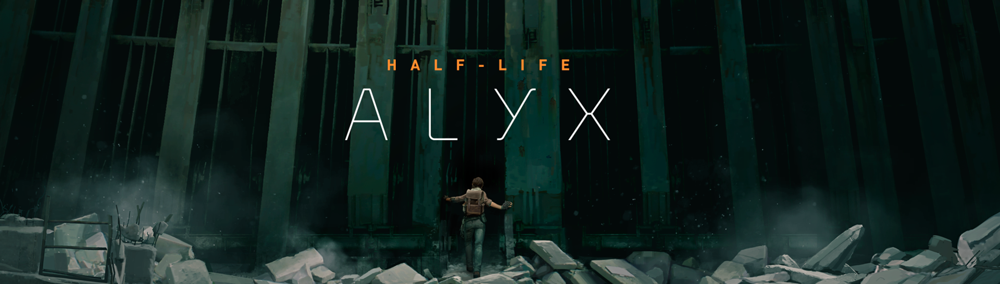
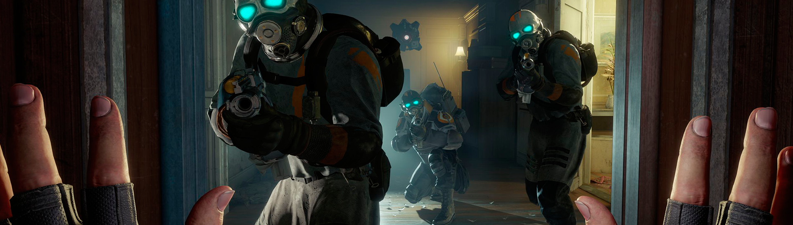
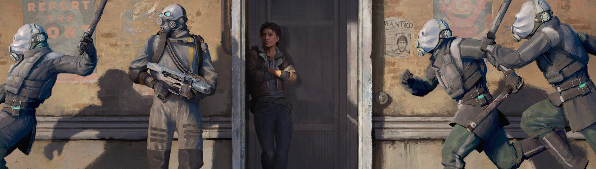

Análisis Half-Life Alyx: Mucho más que Half-Life 3
El primer Half-Life en 13 años es el Half-Life 3 que los seguidores de la saga de Valve llevan
esperando más de una década. A pesar de que en el título, Half-Life: Alyx, no se vea un número tres
por ningún lado, la importancia que este juego tiene para la serie, para su género y para la
tecnología es la misma que podría haber tenido una entrega numerada.
Su problema principal es también su mayor virtud. Alyx solo puede jugarse en realidad virtual, y hay
que sumar otras limitaciones de accesibilidad a ello que comentaremos más adelante. Pero este título
eleva esa tecnología, desde sus inicios puesta en duda, en el paradigma que los más optimistas con
la VR vaticinaban y deseaban.
Jamás nos hemos sentido tan inmersos en un mundo ficticio como en Half-Life Alyx. La interactividad que
ofrece su escenario, la fisicidad que transmite el mundo, y el movimiento físico al que nos obliga
ofrecen una presencia inverosímil; y las herramientas que tenemos a nuestra disposición nos sumergen en
una aventura que en todo momento parece un Half-Life más, pero elevado a la enésima potencia. Cada vez
que nos poníamos el casco de realidad virtual nos invadía una sensación de incredulidad, a pesar de
llevar jugando un buen puñado de horas.
Lo que ha conseguido Valve no es, ni mucho menos, una simple adaptación de una de las sagas más
prestigiosas de los videojuegos a la realidad virtual. Es, como ya lo fueron las dos primeras entregas
protagonizadas por Gordon Freeman, un título que soluciona problemas de su tecnología y que innova en su
género las aventuras de acción en primera persona para realidad virtual. El culpable principal de esto
es un invento aún más interesante que el arma de gravedad de Half-Life 2 y aún más versátil que la
pistola de portales de Portal.

Los Guantes de gravedad: aguantando la exploración, los puzles y el combate
La exploración de los escenarios en casi cualquier juego de realidad virtual es más divertida que su
equivalente en un título tradicional. Es más satisfactorio rebuscar entre una estantería con tus propias
manos, cogiendo cajas para ver su contenido, o inclinándote para ver qué se oculta detrás de unos
bidones, que pulsar "X" para que un avatar recoja automáticamente un ítem. En Alyx nos tendremos que
agachar para pasar por huecos para llegar hasta esa mejora de arma que vemos al fondo. A veces habrá que
apilar muebles para subirnos a ellos y acceder a la planta de arriba de un edificio a través de un
boquete en el techo.
Sin embargo, esto acarrea problemas. En situaciones donde necesitamos actuar rápido es inviable
detenerse a explorar cada recoveco. Y en otras ocasiones quizá estemos cansados, física y mentalmente,
de ponernos a rebuscar en las taquillas, cajones y otros elementos del escenario. Aquí es donde entran
en juego los Guantes de gravedad: un invento repleto de chips al descubierto, cables y otros detallitos,
como una pantalla donde se nos indica nuestra vida, que prácticamente nos convierten en Spider-Man.
Apuntamos hacia un objeto: una silla, una bombona explosiva, una resina para mejorar nuestras armas,
cargadores, etc.; cerramos los dedos y tiramos hacia atrás, haciendo que el ítem vuele hacia nosotros.
Cuando esté a nuestra altura, volvemos a cerrar la mano para cogerlo. Es versátil, divertido e
increíblemente satisfactorio.

Alyx no es un spin-off
Los guantes también solucionan otro problema pesado de muchos juegos de realidad virtual: la gestión del
inventario. Aquí no tenemos una mochila donde guardar cientos de ítems, sino un hueco en cada muñeca
donde almacenar granadas, jeringas para curarnos un poquito y bichos que podemos utilizar en paneles
repartidos por los escenarios para sanarnos completamente. La munición se guarda automáticamente en la
mochila al llevar los cargadores que encontremos hasta nuestro hombro. Las armas y una herramienta para
piratear son fácil y rápidamente accesibles pulsando el stick (o botón) de nuestra mano principal y
moviéndola hacia el arma elegida.
El invento también afecta a los puzles. En Alyx, como es habitual en esta serie, se dan un montón de
situaciones en las que nos vemos encerrados en una habitación, y a través de mecanismos, botones y
ciertas dosis de inteligencia daremos con la satisfactoria solución para abrir una puerta o desbloquear
un camino. Muchos de ellos, como en la segunda parte, tienen que ver con las físicas: por ejemplo, un
barril que sujeta una plataforma que bajará al quitarlo en esta ocasión, cogiéndolo literalmente o
arrastrándolo con nuestros guantes a distancia.
Pero también hay rompecabezas sencillos que aparecen cada vez que vamos a piratear una taquilla de la
Alianza, una estación de mejoras de arma o al desactivar una mina. Al principio pensábamos que se nos
harían pesados, porque el tipo de puzle es casi idéntico para cada una de las acciones, pero lo cierto
es que van creciendo en complejidad, se tarda poco en hacerlos y la forma de solucionarlos es
innovadora, a pesar de que su concepto no sea ni mucho menos original. Son puzles imposibles sin
realidad virtual porque se basan en el espacio tridimensional. Uno de ellos se trata de una esfera: con
una mano la vamos girando, mientras que, con la otra, usando la herramienta de pirateo, conectamos los
puntos azules mientras evitamos que nos toquen los rojos. Otro nos pone delante de una matriz con puntos
y líneas que debemos conectar entre ellas, para lo que será necesario movernos a su alrededor,
agacharnos y girar la cabeza para comprender bien su perspectiva. Algunos nos ponen a hacer de
electricista, siguiendo circuitos que debemos conectar a lo largo de distintas estancias, abriendo
cuadros de mando, teniendo cuidado de las trampas e incluso de plantas carnívoras que nos pueden morder.
En definitiva, se trata de puzles que nos hacen sentirnos como una mezcla del Tom Cruise de Minority
Report y del de Misión Imposible.